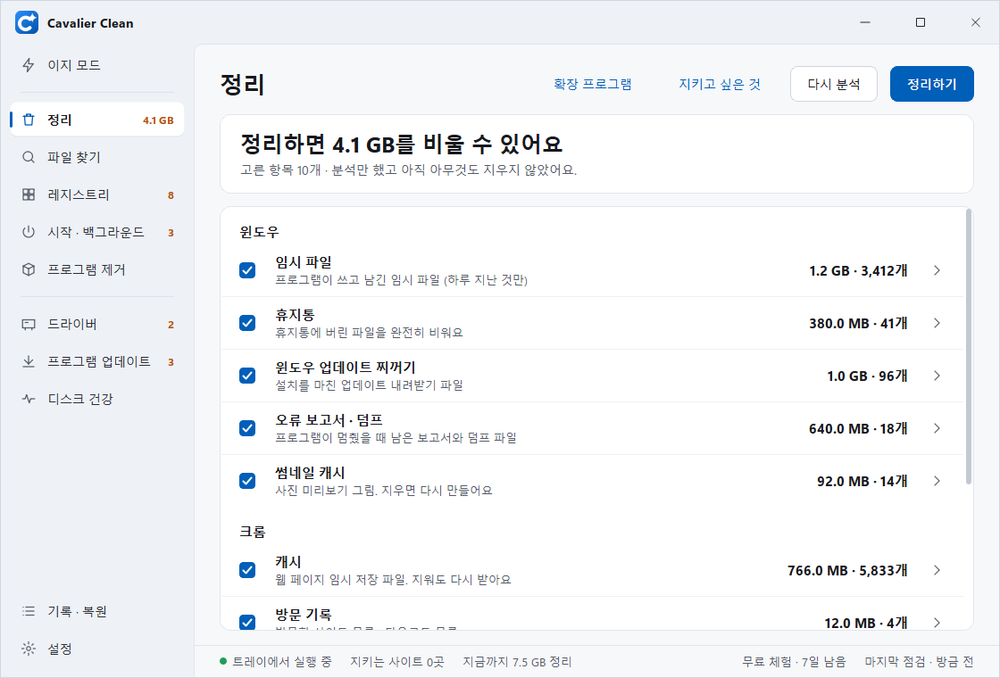
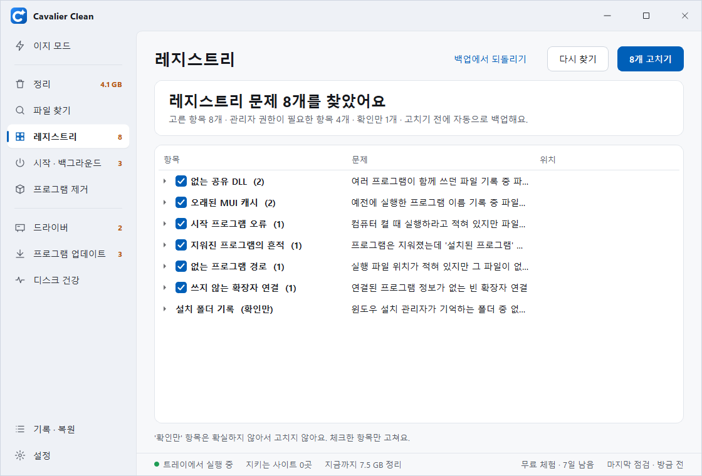
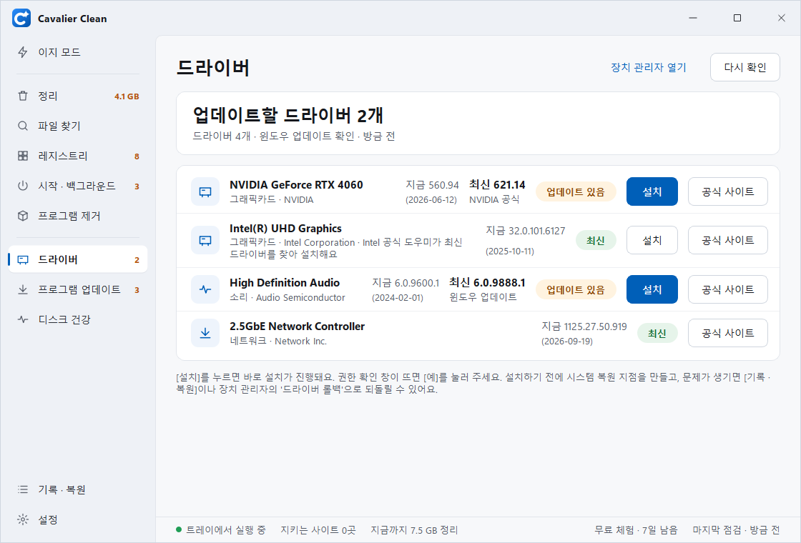
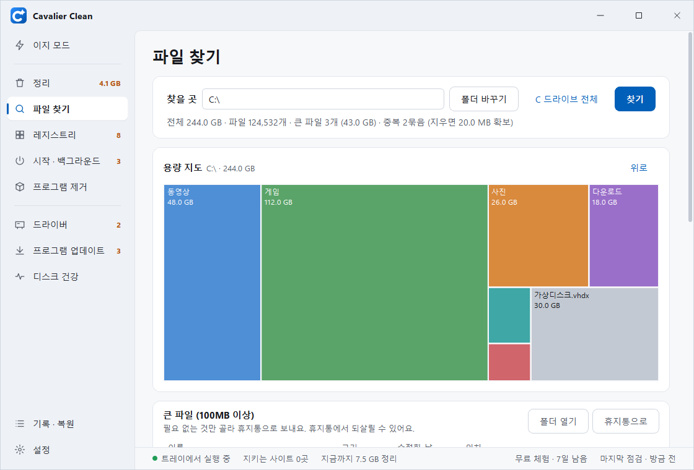
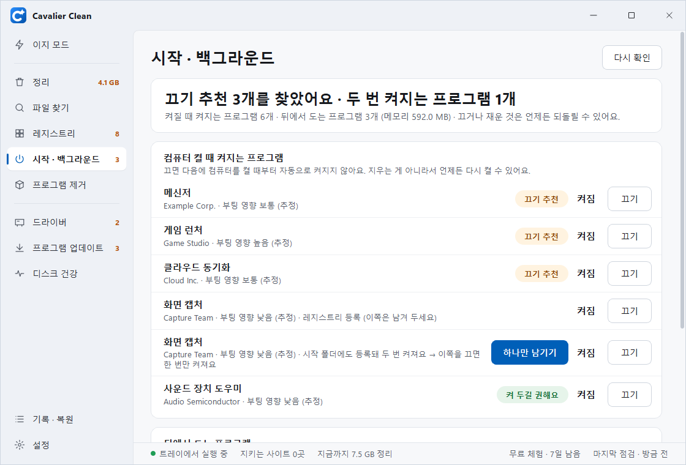

PC를 한 번에 점검하고
깨끗하게 정리해요
찌꺼기 파일, 레지스트리, 드라이버, 시작 프로그램까지 한 화면에서. 고치기 전에 무엇을 바꾸는지 먼저 보여드리고, 무엇이든 되돌릴 수 있어요.

필요한 정리 기능이 다 들어 있어요
처음엔 '이지 모드'에서 [점검 시작] 한 번이면 돼요. 더 자세히 보고 싶으면 메뉴별로 골라 쓰세요.
⚡ 이지 모드
PC 점수와 고칠 점을 한 화면에. 체크한 것만 [N개 고치기]로 한 번에 고쳐요.
🧹 정리
윈도우 임시 파일 · 휴지통 · 업데이트 찌꺼기, 크롬 · 엣지 · 웨일의 캐시 · 방문 기록 · 쿠키, 최근 문서 · 탐색기 기록.
🧩 레지스트리
없는 파일을 가리키는 기록만 찾아요. 확실하지 않은 건 '확인만' 하고 건드리지 않아요.
⏻ 시작 · 백그라운드
켤 때 같이 켜지는 프로그램을 끄고, 두 번 등록된 것은 하나만 남겨요. 뒤에서 도는 앱은 재웠다 깨울 수 있어요.
🔍 파일 찾기
용량 지도로 무엇이 자리를 차지하는지 한눈에. 큰 파일 · 중복 파일 찾기, 파일 완전 삭제.
🖥️ 드라이버
윈도우 업데이트 · NVIDIA · AMD · Intel 공식 드라이버를 [설치] 한 번으로. 지금 것보다 오래된 건 권하지 않아요.
⬇️ 프로그램 업데이트
설치된 프로그램의 새 버전을 찾아 골라서 업데이트해요.
🗑️ 프로그램 제거
원래 제거 프로그램으로 지운 뒤, 남은 폴더 · 설정까지 찾아 정리해요.
🩺 디스크 건강 · 기록 · 복원
SSD 수명 · 온도 · 상태, 지금까지 정리한 용량, 되돌릴 수 있는 것을 한곳에.
⏰ 예약 정리
정한 요일 · 시각에 찌꺼기만 조용히 정리해요.
🌐 브라우저 닫으면 정리
브라우저를 닫을 때 캐시를 정리해요. 로그인을 지킬 사이트는 그대로.
🔔 용량 부족 알림
C 드라이브가 꽉 차기 전에 알려드려요.
화면 둘러보기
모두 실제 프로그램 화면이에요. (예시 데이터)

지우기 전에 먼저 보여줘요
[분석]을 누르면 항목마다 얼마나 지울 수 있는지 보여줘요. 분석만으로는 아무것도 지워지지 않아요.
- 사용 중인 파일 · 하루가 안 된 임시 파일은 건너뛰어요
- 로그인을 지킬 사이트 · 지우면 안 되는 폴더를 정해 둘 수 있어요
- 계정 동기화 중인 브라우저는 미리 알려드려요

레지스트리도 안심하고
없는 파일을 가리키는 기록만 골라요. 고치기 전에 자동으로 백업하고, [백업에서 되돌리기]로 언제든 되돌려요.

드라이버는 [설치] 한 번
장치 · 지금 버전 · 최신 버전 · 찾은 곳을 한 줄에. 제조사 공식 파일만 받고, 디지털 서명을 확인한 뒤 설치해요. 설치 전에는 시스템 복원 지점을 만들어요.

무엇이 용량을 먹는지 한눈에
넓을수록 큰 폴더예요. 눌러서 안으로 들어가 볼 수 있어요. 큰 파일 · 중복 파일은 목록만 보여주고, 고른 것만 휴지통으로 보내요.

컴퓨터가 더 빨리 켜지게
켤 때 무거운 프로그램은 '끄기 추천'으로 알려드려요. 끄는 거라 지우지 않고, 언제든 다시 켤 수 있어요.
이렇게 지켜드려요
정리 프로그램은 '덜 지우더라도 안전하게'가 먼저예요.
확인받고 바꿔요
무엇을 바꾸는지 목록으로 보여주고, 확인을 누른 뒤에만 바꿔요.
백업 먼저
레지스트리는 .reg 백업, 드라이버는 복원 지점을 먼저 만들어요. 백업이 안 되면 아무것도 바꾸지 않아요.
시스템은 건드리지 않아요
윈도우 폴더 · 프로그램 폴더 · 내 문서 폴더 자체는 지울 수 없게 막아 두었어요.
휴지통이 기본
파일은 휴지통으로 보내서 되살릴 수 있어요. 완전 삭제는 두 번 확인해요.
시작하기
설치 없이 압축만 풀면 바로 써요.
내려받기
아래 버튼으로 zip 파일을 받아요.
압축 풀고 실행
원하는 곳에 압축을 풀고 CavalierClean.exe를 실행해요.
점검 시작
이지 모드에서 [점검 시작] → 체크한 것만 [고치기]. 처음 7일은 모든 기능이 무료예요.
자주 묻는 질문
정말 광고가 없나요?
네. 광고나 다른 프로그램 끼워 설치가 없어요. 7일 체험이 끝난 무료판에서만 정리할 때 15초 기다림 창이 떠요.
잘못 지우면 어떡하죠?
파일은 휴지통으로 보내고, 레지스트리는 백업, 드라이버는 복원 지점을 먼저 만들어요. [기록 · 복원]에서 되돌릴 수 있어요.
7일이 지나면 어떻게 되나요?
무료판으로 계속 쓸 수 있어요. 정리 · 고치기를 할 때마다 15초를 기다리고, 자동 정리는 꺼져요. 라이선스 키를 넣으면 기다림 없이 쓸 수 있어요.
인터넷에 제 정보를 보내나요?
아니요. 정리 · 점검은 모두 PC 안에서 해요. 드라이버 · 프로그램 업데이트를 확인할 때만 윈도우 업데이트와 제조사 공식 사이트에 접속해요. 라이선스 확인도 인터넷 없이 해요.
쿠키를 지웠더니 로그인이 풀렸어요.
[정리] → [지키고 싶은 것]에 사이트 주소(예: naver.com)를 넣어 두면 다음부터는 로그인이 유지돼요.
"Windows의 PC 보호" 창이 떠요.
새 프로그램이라 나오는 안내예요. [추가 정보] → [실행]을 눌러 주세요.
어떤 윈도우에서 쓸 수 있나요?
Windows 10 · 11 (64비트)에서 써요.